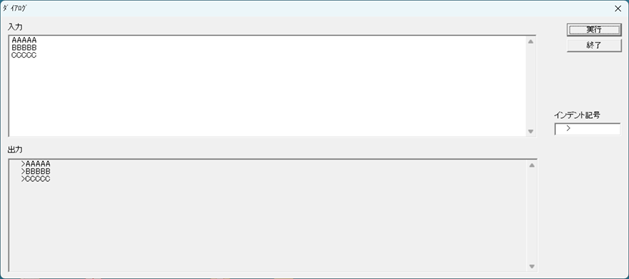

★ 【GitHub Copilot】引用符（インデント記号）を付けるツールの作成 ★
【１】はじめに
メールに返信するとき、メーラーの引用機能を使うとメール全文が引用されてしまうため、一部だけを引用したい場合は、手動で引用符（>）を付けている人が多いと思います。
引用範囲が広いと手動で付けるのは大変なので、下記のような、引用符を自動的に付加するツールを20年ほど前に作成しました。

上記の画面の入力ウィンドウに、引用したいテキストをペーストして「実行」をクリックすると、下の出力ウィンドウに引用符の付いたテキストが作成されます。
結構便利なのでずっと使っており、ソースコードの公開も考えましたが、元のソースコードが見つからなかったため、Visual Studio 2022で新たに作り直しました。
シンプルなソフトなので、AIで簡単に作成できました。話題のClaude Codeは（2026年10月時点で）有償プランしかないため、今回はGitHub Copilot（無償版）を使用しました。実際の手順を紹介します。
なお、GitHub Copilotを使えるようにする方法は、ここでは説明しません。公式ドキュメントや他の解説記事をご参照ください。
【２】作成ステップ
今回は以下のステップで作成しました。
- ステップ１：GitHub Copilot用のプロンプト作成
- ステップ２：Visual Studio 2022で新規Win32プロジェクトを作成
- ステップ３：コード生成
- ステップ４：ビルドと修正
以下、各ステップについて説明します。
【３】ステップ１
いきなりGitHub Copilotにプロンプトを入力するのではなく、まずM365 Copilotでプロンプトを作成しました。
これは、効率的なプロンプトを作成することで、GitHub Copilotと修正のためにやり取りする回数を減らすためです（※）。
汎用のAIであれば、M365 CopilotでなくてもGeminiやClaudeでも構いません。
M365 Copilotには、上記の画面イメージと下記のテキストを入力しました。
※ GitHub Copilot無償版は、チャット回数に月50回の上限があります（2026年10月時点）。有償版にもクレジットという消費単位があるので、効率的なプロンプト生成は有効だと思います。
以前、VC6で添付のようなプログラムを作って使っていました。
VisualStudio 2022のC++とWin32環境でGitHub Copilotに同じ様なプログラムを作ってもらいたい。
GitHub Copilotへ渡すプロンプトを作って下さい。
1)上の枠（入力）にテキストを入れる
2)「実行」をクリックする
3)上の枠の文字列の各行の先頭に「インデント記号」下のテキストボックスで表示されている文字列を挿入したテキストが、下の枠(出力)に表示される
4)「終了」をクリックすると終了する
5)「インデント記号」下のテキストボックスには最初から「 >」が入っているが編集可能
6) 5)の文字列は「実行」をクリックしたタイミングで、オリジナルのINIファイルに保存される
7) 6)のINIファイルに記録された文字列は、起動時に「インデント記号」下のテキストボックスに反映される
8) 6)のINIファイルがない状態で、起動した場合は、5)の状態になる。
M365 Copilotからは、下記のプロンプト文案が出力されました。
Visual Studio 2022、C++、Unicode、Win32 APIを使用して、次の仕様を満たすWindowsデスクトップアプリケーションを作成してください。
# 目的
入力された複数行テキストの各行の先頭に、ユーザーが指定した「インデント記号」を付加し、変換結果を出力欄へ表示する小さなGUIツールを作成します。
以前Visual C++ 6.0で使用していたダイアログ形式のツールを、Visual Studio 2022のC++とWin32 APIで作り直します。
MFC、ATL、.NET、外部ライブラリは使用せず、純粋なWin32 APIで実装してください。
# プロジェクト条件
- Visual Studio 2022
- C++
- Windows デスクトップ アプリケーション
- Win32 API
- Unicode文字セット
- x64およびWin32の両方でビルド可能
- C++17以上
- プリコンパイル済みヘッダーに依存しない構成
- 警告レベル /W4 を想定
- 例外や未処理エラーで終了しないようにする
- 文字列には std::wstring を使用する
- Windows APIはW版を明示的に使用する
- strcpy、sprintfなどの安全でない関数は使用しない
# 画面構成
ダイアログ形式のメイン画面を作成してください。
画面には次のコントロールを配置してください。
1. 「入力」というラベル
2. 複数行入力用のEDITコントロール
3. 「出力」というラベル
4. 複数行出力用のEDITコントロール
5. 「実行」ボタン
6. 「終了」ボタン
7. 「インデント記号」というラベル
8. インデント記号を入力するための1行EDITコントロール
画面レイアウトは以下のイメージにしてください。
- 画面左側の上半分に入力欄
- 画面左側の下半分に出力欄
- 画面右上に「実行」ボタン
- 「実行」ボタンの下に「終了」ボタン
- 画面右側中央付近に「インデント記号」ラベルと1行EDITコントロール
- 入力欄と出力欄には縦スクロールバーを付ける
- 入力欄は複数行入力可能とする
- 出力欄は複数行表示可能とし、読み取り専用にする
- ウィンドウサイズはおおむね1250×550ピクセル程度とする
- 初期フォーカスは入力欄に設定する
- Tabキーで自然な順番にフォーカスが移動するようにする
- 「実行」ボタンを既定のボタンにする
- Escキーによる不用意な終了は行わない
- コントロールには標準GUIフォントを設定する
リソーススクリプトを使用してダイアログとコントロールを定義してください。
# 動作仕様
## 起動時
1. 実行ファイルと同じフォルダにあるINIファイルを読み込みます。
2. INIファイル名は「IndentTool.ini」としてください。
3. INIファイルのセクション名は「Settings」としてください。
4. キー名は「IndentString」としてください。
5. INIファイルに値が保存されている場合、その値を「インデント記号」EDITコントロールに表示してください。
6. INIファイルが存在しない場合、キーが存在しない場合、または値を読み込めない場合は、既定値として「4個の半角スペースの後に半角の >」を表示してください。
7. 既定値をC++文字列で表す場合は L" >" としてください。
8. INIファイルが存在しないだけでは、起動時にINIファイルを新規作成しないでください。
## 「実行」ボタン押下時
1. 入力欄からすべてのテキストを取得してください。
2. 「インデント記号」EDITコントロールから現在の文字列を取得してください。
3. 入力テキストを行単位で処理してください。
4. 各行の先頭に、インデント記号の文字列をそのまま付加してください。
5. 変換した複数行テキストを出力欄に表示してください。
6. 空行が含まれている場合も、その空行の先頭にインデント記号を付加してください。
7. 入力文字列の改行コードとしてCRLF、LF、CRのいずれが含まれていても正しく行に分割してください。
8. 出力欄の改行コードはWindows標準のCRLFに統一してください。
9. 入力文字列の最後に改行がない場合、変換結果の末尾に不要な空行を追加しないでください。
10. 入力文字列の最後に改行がある場合は、末尾の空行も入力の一部として扱ってください。
11. 入力欄が完全に空の場合は、出力欄も空にしてください。
12. インデント記号が空文字列の場合は、入力文字列を改行形式だけCRLFに正規化して出力してください。
13. 処理後、出力欄の先頭が表示されるようにしてください。
14. 「実行」ボタンを押したタイミングで、インデント記号の現在値をINIファイルへ保存してください。
15. 起動時に読み込んだINIファイルと同じパスへ保存してください。
16. INIファイルの保存にはWritePrivateProfileStringWを使用してください。
17. INIファイルの読み込みにはGetPrivateProfileStringWを使用してください。
18. 実行ファイル自身のフォルダはGetModuleFileNameWで取得してください。
19. カレントディレクトリに依存してINIファイルの場所を決めないでください。
20. INIファイルの保存に失敗した場合は、MessageBoxWで日本語のエラーメッセージを表示してください。ただし、テキスト変換結果は可能な限り出力してください。
## 「終了」ボタン押下時
- アプリケーションを正常終了してください。
- 終了時にはINIファイルを保存しないでください。
- インデント記号の保存は「実行」ボタンを押した場合だけ行ってください。
## ウィンドウを閉じた場合
- タイトルバーの閉じるボタンを押した場合も正常終了してください。
- この場合もINIファイルを保存しないでください。
# 変換例
インデント記号が次の文字列の場合です。
>
ここで、> の前には半角スペースが4個あります。
入力：
AAAAA
BBBBB
CCCCC
出力：
>AAAAA
>BBBBB
>CCCCC
# INIファイル例
[Settings]
IndentString= >
「IndentString=」と「>」の間には半角スペースが4個あります。
# 実装上の注意
- 入力可能な文字数を固定長バッファで制限しないでください。
- GetWindowTextLengthWで必要な文字数を取得してから動的にバッファを確保してください。
- 長い複数行テキストでも処理できるようにしてください。
- 日本語を含むUnicode文字列を正しく処理してください。
- 行分割処理は独立した関数にしてください。
- 変換処理は、GUI処理から分離したテスト可能な関数にしてください。
- INIファイルのパス取得、読み込み、書き込みも、それぞれ関数として分離してください。
- ハンドルや戻り値を確認し、失敗時の処理を入れてください。
- 不要なグローバル変数は使用しないでください。
- コントロールIDはresource.hにまとめてください。
- コードには、VC6経験者がVisual Studio 2022のWin32コードを理解できる程度の日本語コメントを付けてください。
- 過度なクラス設計や抽象化は不要です。
- 小規模な保守ツールとして、読みやすく単純な構成を優先してください。
# 作成するファイル
最低限、次のファイルを作成してください。
- main.cpp
- resource.h
- IndentTool.rc
- targetver.h
- README.md
Visual Studioのプロジェクトで追加設定が必要な場合は、必要な設定内容も説明してください。
# 作業手順
次の順番で進めてください。
1. 最初に、実装方針と作成予定ファイルを簡潔に説明してください。
2. 続いて、必要なソースファイルとリソースファイルをすべて作成してください。
3. Visual Studio 2022でビルドしてください。
4. ビルドエラーや警告が出た場合は、原因を確認して修正してください。
5. Debug x64構成で正常にビルドできるところまで対応してください。
6. 可能であればWin32構成でもビルド確認してください。
7. 最後に、作成・変更したファイル、実装内容、ビルド結果、残っている確認事項を一覧で報告してください。
不明点があっても、上記仕様から合理的に判断できる範囲は実装を進めてください。
勝手にMFC、C++/CLI、C#、Windows Formsへ変更しないでください。
生成したコードが実際にコンパイル可能かを確認し、存在しない関数や不完全な省略コードを出力しないでください。
プロジェクト名を「Brackets」にしたいので、この出力内の「Indent」の部分を「Brackets」に変更したものを、GitHub Copilotへ入力するプロンプトとしました。
【４】ステップ２
M365 Copilotによるプロンプト作成時の解説を以下に示します。
Visual Studio 2022のGitHub Copilot Chatで新規Win32プロジェクトを開き、Agentモードにして、
以下をそのまま貼り付ける使い方を想定しています。
この解説に従って、新規Win32プロジェクトを作成しました。また、プロジェクト名は「Brackets」にしました。
【５】ステップ３
ステップ１で作成したプロンプトをGitHub Copilot Chatのウィンドウに入力してコードを生成し、そのまま適用しました。
【６】ステップ４
以下のプロセスを繰り返してブラッシュアップしました。
- ビルドしてエラーが発生したら、エラーメッセージをGitHub Copilotに入力し、設定やコードを修正する
- GitHub Copilotが提案した確認項目に従って、動作確認を実施する
- 自分の意図と異なる部分は、修正を指示して適用する
今回は、ウィンドウサイズが変更できなかったため、変更可能にするよう指示しました。
【７】おわりに
GitHub Copilotによる作成は非常に効率的でした。操作に不慣れな部分も含めて、数時間で完成しました。
また、モダンなコードが生成されました。個人的にはC++の知識もあるものの、C言語の経験が中心なので、今回生成された、ネームスペースを駆使したC++ネイティブコードには感動しました。
【８】リンク
ソースコード（GitHub）
【改訂記録】
2026/10/05版：公開
[ホームへ戻る]